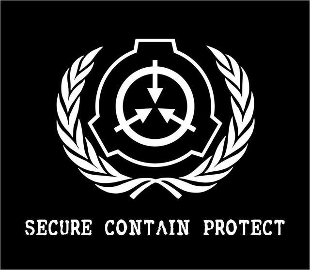

Plano de Contigência: SCP 096
O referido plano destina-se a uma possível quebra do SCP-096. Todos os funcionários de nível 4 ou superior devem ler esse plano para agir prontamente.
SCP-096
SCP-096 é uma criatura humanoide, medindo aproximadamente 2,38 metros de altura. Sujeito mostra ter pouca massa muscular, com a análise preliminar de massa corporal sugerindo uma leve desnutrição. Braços estão grosseiramente fora de proporção com o resto do corpo do sujeito, com extensão aproximada de 1,5 metros cada. A pele é principalmente desprovida de pigmentação, sem nenhum sinal de qualquer cabelo no corpo
Essa entidade é classificada como Euclid e costuma apresentar comportamento semelhante ao choro humano. Entretanto, quando sua face é observada, seja presencialmente ou por foto/vídeo, o SCP entra em um estado de fúria e através de meios desconhecidos, persegue e mata quem o observou
SCP-096 deve ser mantido em sua cela, em um cubo de aço hermeticamente fechado de 5m x 5m x 5m, em todos os momentos. Verificações semanais para quaisquer rachaduras ou buracos são obrigatórios. Não é permitido nenhuma vigilância por vídeo ou ferramentas ópticas de qualquer tipo dentro da célula de SCP-096.
A Fundação trabalha arudamente para garantir que nenhuma imagem de SCP-096 seja vazada, especialmente na Internet. Caso isso ocorra, a Fundação elaborou este protocolo e os seguntes passos:
PROCEDIMENTOS
- Anúncio de Quebra de SCP-096 para todos os sítios
- Todos os sítios devem entrar em modo de atenção
- Todos os operativos de campo devem ser notificados e equipados para conter SCP-096
- A localização de SCP-096 deve ser monitorada
- A GOC (Global Occult Coalition) deve ser notificada e constatada como aliada
- A MTF Null-7 deve ser despechada para abater SCP-096
- Todas as imagens de SCP-096 devem ser imediatamente removidas ou incineradas
- Sítios próximos de SCP-096 devem enviar Forças de Reposta Rápida (RRT)
- Civis devem ser alertados do perigo de SCP-096
- Civis expostos á SCP-096 devem se despedir de suas famílias e partir para áreas isoladas
- O pessoal da Fundação deve agir para neutralizar (se isso for possivel) SCP-096 e garantir a segurança e ordem civil
- SCP-096 deve ser contido e transportado para sua cela sobra escolta pesada das MTFs Null-7 e Epsilon-11 com o apoio das RRTs próximas
- Agentes meméticos devem ser aplicados nos civis sobreviventes
- Todos os rastros da Fundação devem ser permanentemente destruídos